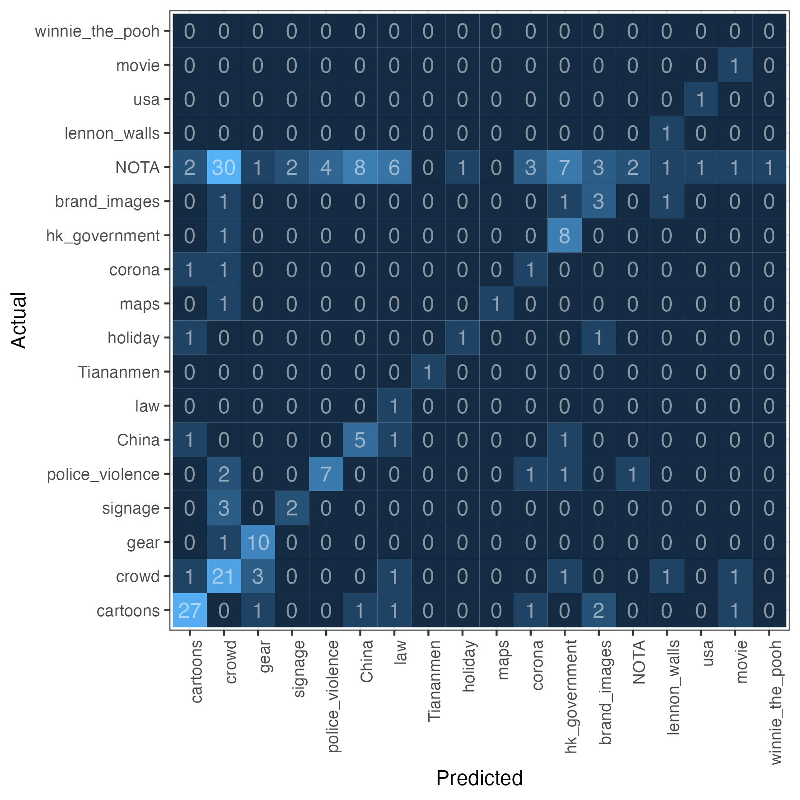
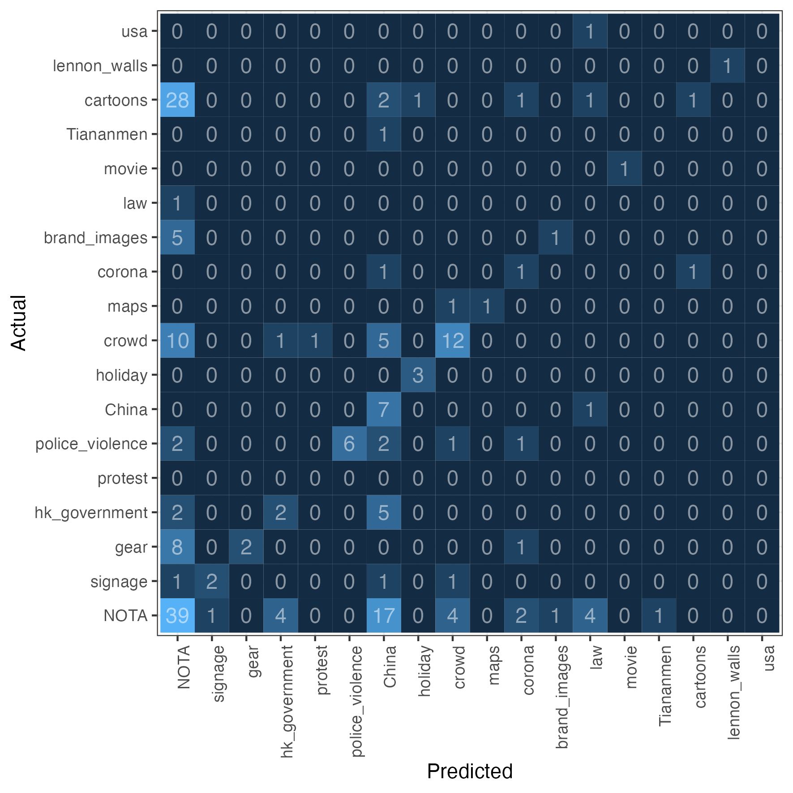

How Image-As-Data Approaches Can Help Analysing Protest and Its Organisation: Methods and Applications
Analysis of Protest Themes using
Large Multimodal Models
Justin Chun-ting Ho
Amsterdam School of Communication Research
In collaboration with Milan Ismangil (Utrecht University)


Slides: https://justinchuntingho.github.io/LOOPS_slides/
Visuals in Social Movement Studies
- Visual materials play an important role in the mobilisation of social movements
- Automated analysis of visual data is extremely challenging
- Much of the work was done qualitatively
Social Media and Hong Kong Social Movement
- Social media play increasingly important roles
- Connective action, networked social movement, leaderless movements
- Visual materials are often neglected
how useful are LMMs for social science research?
Data
- Two largest movement publicity Telegram channels
@hkposter777 and @hkstandstrong_promo
- 115,635 images
(from channel creation date to 15 June 2024)
- Photos, posters, memes, infographics, comics
Coding Scheme
- Developed coding scheme (19 categories) based on Ismangil and Schneider (2023)
- Annotate a random sample of 200 images
(Two coders, Krippendorff's alpha 0.563)
Analysis
- Tested CLIP, Llava 7B, Idefics 3, and GPT-4o
- Created a stratified sample of 100 images per month (n=6069)
Crowd

Cartoons

Confusion Matrix (GPT-4o)

Confusion Matrix (Llava)

Discussion
- Duel functionalities of Telegram (photos and artworks)
- Social media's role during movement abeyance
Thank You!
Twitter/X: @justin_ct_ho
Github: justinchuntingho
Email: j.c.ho@uva.nl